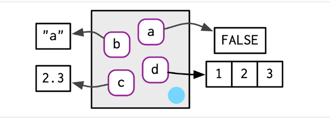
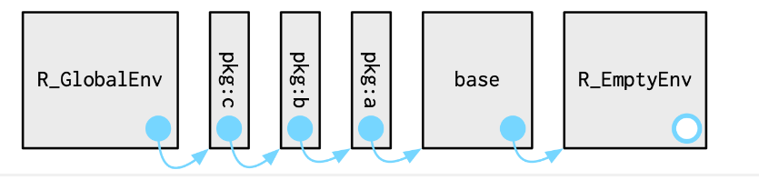

nome <- "Leonardo"
globalenv()<environment: R_GlobalEnv>ls(globalenv())[1] "nome"nome[1] "Leonardo"Ambientes (environments) em R são estruturas de dados que representam espaços onde objetos, como variáveis e funções, são associados a nomes.
Você pode pensar em um ambiente como um conjunto de nomes, sem ordem implícita.
nome ao valor Leonardo, que, por padrão, é guardada dentro do global environment.nome <- "Leonardo"
globalenv()<environment: R_GlobalEnv>ls(globalenv())[1] "nome"nome[1] "Leonardo"nome , o R vai procurar dentro desse environment um valor para devolvernew.env() ou rlang::env()e1 <- rlang::env(
a = FALSE,
b = "a",
c = 2.3,
d = 1:3,
)
novo_ambiente = new.env() # criando o ambiente
novo_ambiente$nome <- "Nascimento" #criando objeto dentro do ambiente ou
assign(nome,"Nascimento",envir = novo_ambiente ) #criando objeto dentro do ambiente
nome[1] "Leonardo"get("nome",envir = novo_ambiente)[1] "Nascimento"rlang::env_print() para mais informações sobre o ambienterlang::env_print(novo_ambiente)<environment: 0x000002c1235aac50>
Parent: <environment: global>
Bindings:
• nome: <chr>
• Leonardo: <chr>env_names()para obter um vetor de caracteres fornecendo as ligações atuaisrlang::env_names(novo_ambiente)[1] "nome" "Leonardo"novo_ambiente.novo_ambiente$idade = 30
rlang::env_print(novo_ambiente)<environment: 0x000002c1235aac50>
Parent: <environment: global>
Bindings:
• nome: <chr>
• Leonardo: <chr>
• idade: <dbl>O ambiente atual ou current_env()é o ambiente no qual o código está sendo executado no momento.
Quando você está experimentando de forma interativa, geralmente é o ambiente global, ou global_env()
rlang::current_env()<environment: R_GlobalEnv>identical(rlang::global_env(), rlang::current_env())[1] TRUErlang::env_poke(novo_ambiente,"professor","Estatística")
rlang::env_bind(novo_ambiente,Displina_1 = "R",Displina_1 = "AED")
rlang::env_names(novo_ambiente)[1] "nome" "Leonardo" "professor" "idade" "Displina_1"rlang::env_has(novo_ambiente, "Displina_1") # verificaçãoDisplina_1
TRUE rlang::env_has(novo_ambiente, "Displina_3")Displina_3
FALSE Todo ambiente tem um pai , outro ambiente
O pai é usado para implementar o escopo léxico: se um nome não for encontrado em um ambiente, R procurará em seu pai (e assim por diante).
Você pode definir o ambiente pai fornecendo um argumento sem nome para rlang::env(). Se você não fornecer, o padrão será o ambiente atual.
Você pode encontrar o pai de um ambiente com rlang::env_parent()
novo_ambiente$idade = 30
idadenovo_ambiente é um environment “abaixo” do global na hierarquia, e o R só estende a sua busca para environments acima .a = 1 # criando um objeto no ambiente global
get("a",envir = novo_ambiente) # buscar o objeto "a" no ambiente novo_ambiente[1] 1parent.env()parent.env(novo_ambiente)<environment: R_GlobalEnv>novo_ambiente_2 = rlang::env(novo_ambiente)
parent.env(novo_ambiente_2)<environment: 0x000002c1235aac50>rlang::env_print(novo_ambiente_2)<environment: 0x000002c123b7a060>
Parent: <environment: 0x000002c1235aac50>rlang::env_parents(novo_ambiente_2)[[1]] <env: 0x000002c1235aac50>
[[2]] $ <env: global>Essa estrutura é muito útil na hora de utilizar funções
Apenas um ambiente não possui pai: o ambiente vazio
rlang::env_parents(novo_ambiente_2,last = rlang::empty_env()) [[1]] <env: 0x000002c1235aac50>
[[2]] $ <env: global>
[[3]] $ <env: package:stats>
[[4]] $ <env: package:graphics>
[[5]] $ <env: package:grDevices>
[[6]] $ <env: package:datasets>
[[7]] $ <env: renv:shims>
[[8]] $ <env: package:utils>
[[9]] $ <env: package:methods>
[[10]] $ <env: Autoloads>
[[11]] $ <env: package:base>
[[12]] $ <env: empty>novo_ambiente_3 = rlang::env(rlang::empty_env())
rlang::env_parents(novo_ambiente_3)[[1]] $ <env: empty>A maioria dos ambientes não é criada por você (por exemplo, com env()), mas sim por R.
Nesta seção, você aprenderá sobre os ambientes mais importantes, começando pelos ambientes de pacote. Em seguida, você aprenderá sobre o ambiente de função vinculado à função quando ela é criada e o ambiente de execução (geralmente) efêmero criado sempre que a função é chamada.
Cada pacote anexado library()ou require()torna-se um dos pais do ambiente global.
O pai imediato do ambiente global é o último pacote que você anexou e o pai desse pacote é o penúltimo pacote que você anexou

Se você seguir todos os pais, verá a ordem em que cada pacote foi anexado. Isso é conhecido como caminho de pesquisa
Você pode ver os nomes desses ambientes com base::search()ou os próprios ambientes com rlang::search_envs():
search() [1] ".GlobalEnv" "package:stats" "package:graphics"
[4] "package:grDevices" "package:datasets" "renv:shims"
[7] "package:utils" "package:methods" "Autoloads"
[10] "package:base" rlang::search_envs() [[1]] $ <env: global>
[[2]] $ <env: package:stats>
[[3]] $ <env: package:graphics>
[[4]] $ <env: package:grDevices>
[[5]] $ <env: package:datasets>
[[6]] $ <env: renv:shims>
[[7]] $ <env: package:utils>
[[8]] $ <env: package:methods>
[[9]] $ <env: Autoloads>
[[10]] $ <env: package:base>attachConcidere o objeto cancer
dados = data.frame(cancer = c(1,0,1,0,1,0,1)) # 1 = paciente com cancer
attach(dados)
search() [1] ".GlobalEnv" "dados" "package:stats"
[4] "package:graphics" "package:grDevices" "package:datasets"
[7] "renv:shims" "package:utils" "package:methods"
[10] "Autoloads" "package:base" head(cancer)[1] 1 0 1 0 1 0require(survival)
search() [1] ".GlobalEnv" "package:survival" "dados"
[4] "package:stats" "package:graphics" "package:grDevices"
[7] "package:datasets" "renv:shims" "package:utils"
[10] "package:methods" "Autoloads" "package:base" head(cancer) inst time status age sex ph.ecog ph.karno pat.karno meal.cal wt.loss
1 3 306 2 74 1 1 90 100 1175 NA
2 3 455 2 68 1 0 90 90 1225 15
3 3 1010 1 56 1 0 90 90 NA 15
4 5 210 2 57 1 1 90 60 1150 11
5 1 883 2 60 1 0 100 90 NA 0
6 12 1022 1 74 1 1 50 80 513 0Uma função vincula o ambiente atual quando é criada. Isso é chamado de ambiente de função.
Determina onde a função pode procurar variáveis não locais (variáveis não definidas dentro da própria função).
# Definindo uma função no ambiente global
f <- function(x,y) {
z <- x + y
return(z)
}
# Chamando a função
resultado <- f(5,1)
print(resultado) [1] 6environment(f) #ou<environment: R_GlobalEnv>rlang::fn_env(f)<environment: R_GlobalEnv>f é definida no ambiente global, portanto, seu ambiente de função é o ambiente global.Cada vez que uma função é chamada, um novo ambiente é criado para hospedar a execução. Isso é chamado de ambiente de execução e seu pai é o ambiente de função.
Eles contêm variáveis locais e referências a variáveis em escopos superiores, como o ambiente global ou ambientes de funções encapsuladoras.
Cada chamada de função tem seu próprio ambiente de execução, isolado dos ambientes de execução de outras chamadas da mesma função.
É assim que R garante que uma função não sobrescreva nada que não deveria. Quaisquer objetos criados pela função são armazenados em um ambiente de tempo de execução seguro e afastado.
# Definindo um valorno ambiente global
x <- 10
# Definindo uma função no ambiente global
f <- function(y) {
z <- x + y
return(z)
}
# Chamando a função
f(5)[1] 15Neste exemplo:
f é definida no ambiente global, portanto, seu ambiente de definição é o ambiente global.
Quando f é chamada com o argumento 5, um novo ambiente de execução é criado.
x é procurado primeiro no ambiente de execução de f. Como não é encontrado, a busca continua no ambiente de definição (ambiente global), onde x é encontrado com o valor 10.
# Definindo um valorno ambiente global
x <- 10
# Definindo uma função no ambiente global
f <- function(y) {
x <- 2
z <- x + y
return(z)
}
# Chamando a função
f(5)[1] 7Neste exemplo:
f é definida no ambiente global, portanto, seu ambiente de definição é o ambiente global.
Quando f é chamada com o argumento 5, um novo ambiente de execução é criado.
x é procurado primeiro no ambiente de execução de f, onde x é encontrado com o valor 2.
Portanto, os cálculos realizados dentro das funções não modificam os objetos do global.
Vamos capturar os ambientes
f = function(y){
ENV = list(ran.in = rlang::current_env(), # execução
parent = rlang::env_parent(rlang::current_env()), # pai
objects = ls.str(rlang::current_env())) # objetos no env de execução
return(ENV)
}
y = 2
f(y=1)$ran.in
<environment: 0x000002c12cc9c390>
$parent
<environment: R_GlobalEnv>
$objects
y : num 1a <- 1
# Ambiente global
# Ambiente de função da fun_externa
fun_externa <- function() {
# Ambiente de execução da função fun_externa
# Ambiente de função da fun_interna
print(rlang::current_env())
b <- 2
fun_interna <- function(d) {
# Ambiente de execução da fun_interna
print(rlang::env_parent(rlang::current_env()))
return(a + b + d)
}
return(fun_interna)
}
# fun_externa é chamada e retorna fun_interna
f <- fun_externa()<environment: 0x000002c123008148>ffunction(d) {
# Ambiente de execução da fun_interna
print(rlang::env_parent(rlang::current_env()))
return(a + b + d)
}
<environment: 0x000002c123008148># fun_interna é chamada com argumento 3
print(f(3)) # Imprime 6<environment: 0x000002c123008148>
[1] 6environment(fun_externa)<environment: R_GlobalEnv>fun_externa <- function() {
funcao_interna <- function(a=1) {
list(ran.in = rlang::current_env(),
parent = rlang::env_parent(rlang::current_env()),
objects = ls.str(rlang::current_env()))
}
return(funcao_interna)
}
minha_funcao <- fun_externa()
minha_funcao()$ran.in
<environment: 0x000002c1215a63c8>
$parent
<environment: 0x000002c1217abba0>
$objects
a : num 1A atribuição regular, <-sempre cria uma variável no ambiente atual.
A superatribuição <<-nunca cria uma variável no ambiente atual, mas modifica uma variável existente encontrada em um ambiente pai.
x <- 0
f <- function() {
x <<- 1
}
f()
x[1] 1create_counter <- function() {
count <- 0
function() {
count <<- count + 1
return(count)
}
}
counter <- create_counter()
print(counter()) # Imprime 1[1] 1print(counter()) # Imprime 2[1] 2